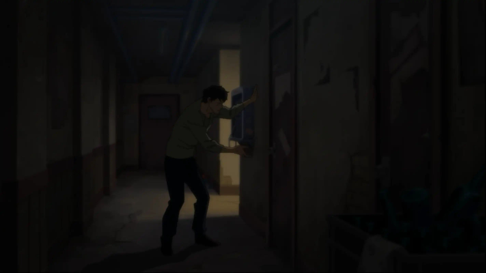
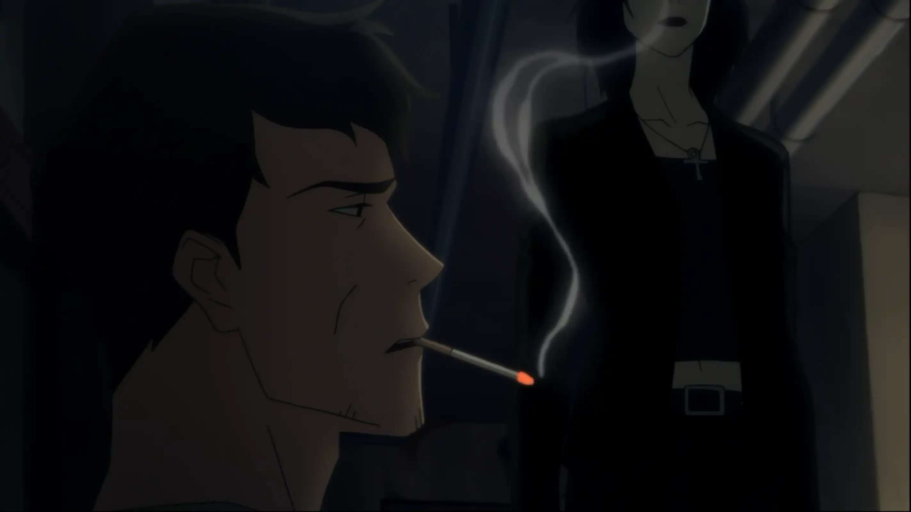
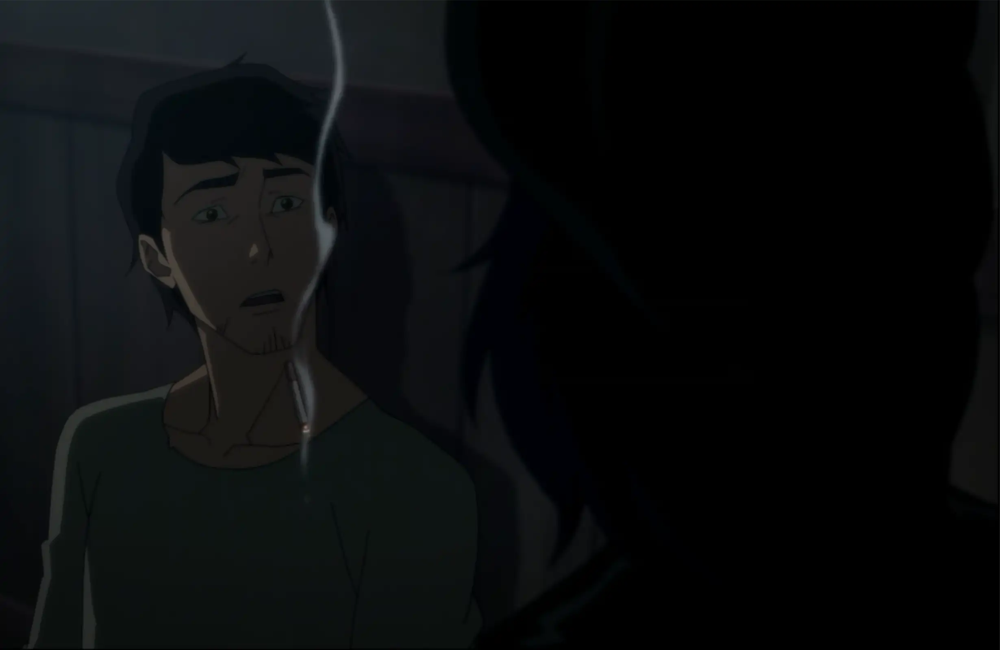
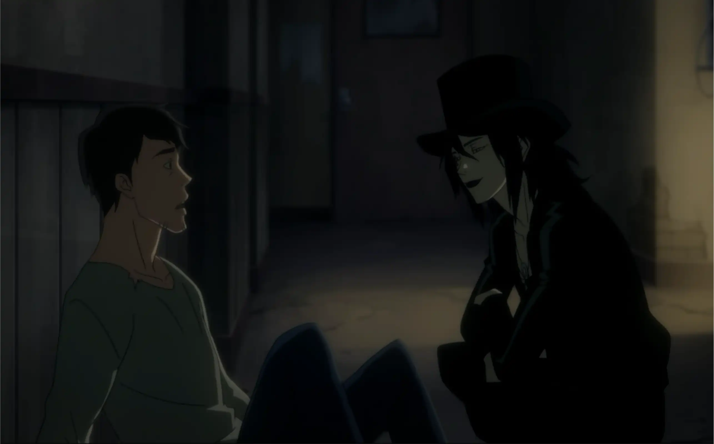
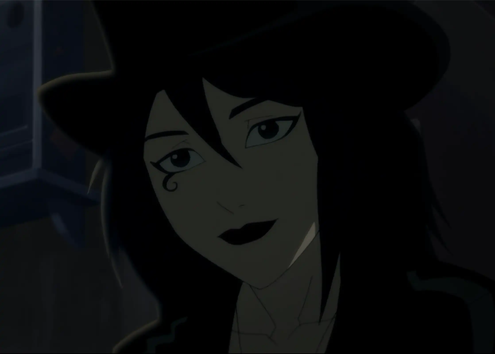
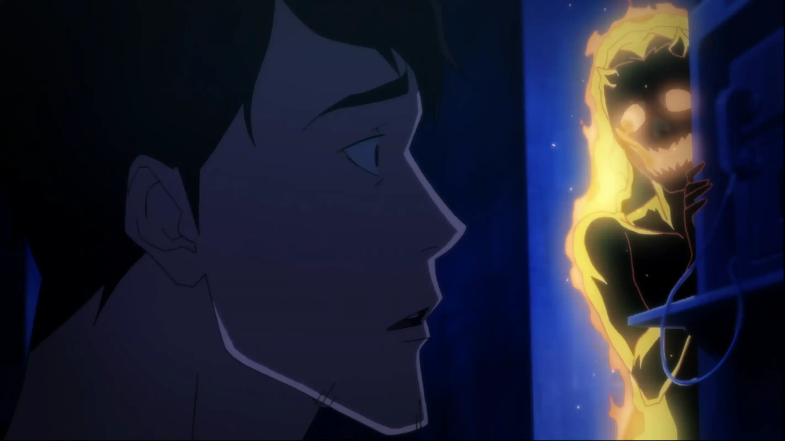
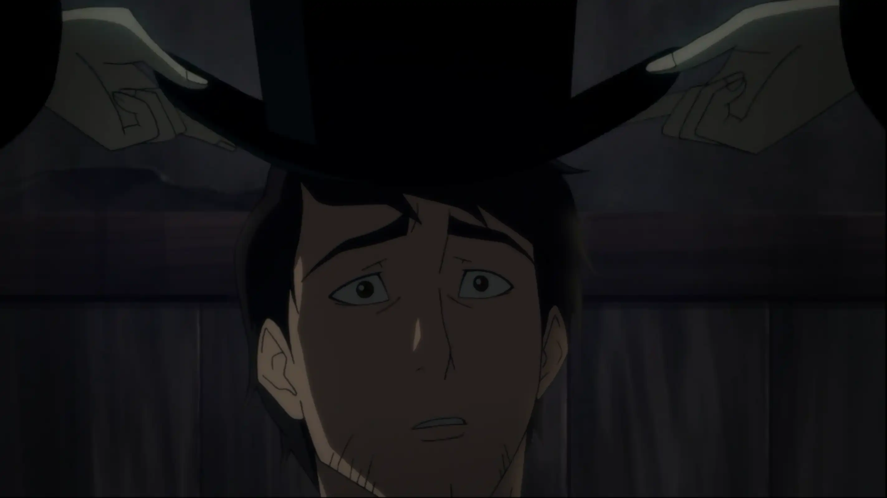
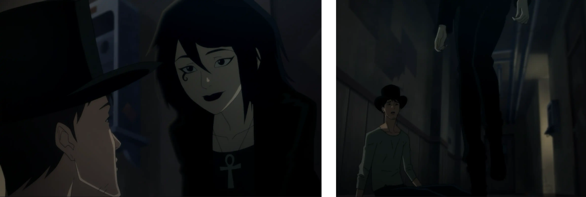
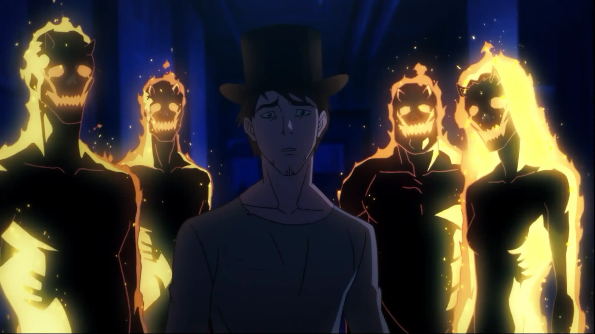

Sombras en el Pasillo | Encuentro
A veces, lo que llega a mi vida… también sabe cómo desvanecerse.
Después de verlo… después de enfrentar ese rostro que creí enterrado, mi cuerpo ya no me responde igual. Camino hacia el pasillo del bar buscando aire, como si ahí pudiera escapar de mis propios demonios.
Pero ni siquiera aquí me dejan en paz. La presión en el pecho me obliga a sentarme en el piso. Enciendo un cigarro, aunque sé que no sirve de nada… y entonces la escucho. Una mujer extraña se acerca y me dice, con una voz clara, que fumar podría matarme.
No levanto la mirada. No tengo fuerzas para discutir con nadie más. Pero cuando por fin la observo… me sorprende. Piel clara, mirada firme, ropa gótica. Un contraste tan marcado que por un momento me hace olvidar todo lo demás.
Ella se acerca un poco más. Me pregunta cómo estoy, como si de verdad quisiera saberlo. Yo le cuento que me despidieron hace poco, pero bromeo para no sonar tan roto… digo que quizá ahora tendré tiempo para pintar.
Ella bromea un poco sobre la situación. Yo… no sé por qué, pero hay algo en ella que me atrapa. La observo y siento que hay algo que necesito dibujar, algo que no puedo entender del todo, pero que quiero intentar capturar.
Y justo cuando empiezo a sentir que puedo respirar, aparece otra vez… otro de mis demonios. Esta vez es ella: mi exnovia. Me mira con desprecio, acusándome de querer conquistar a la chica. Ni siquiera es cierto, pero aun así me hiere.
La chica nota mi reacción, pero no se asusta. Solo sonríe un poco, como si entendiera más de lo que debería. Se quita su sombrero y me lo coloca encima, como si quisiera dejarme un pedazo de ella para recordarla.
Me dice que debe irse. Se incorpora con una elegancia extraña y comienza a caminar por el pasillo hacia la salida.
Abre la puerta. Se vuelve hacia mí una última vez… y se despide.

La observo mientras se aleja, y en cuanto desaparece, mis demonios regresan. Todos. Me rodean como sombras viejas, burlándose, diciéndome que una vez más lo arruiné… que nunca conseguiré nada real.
